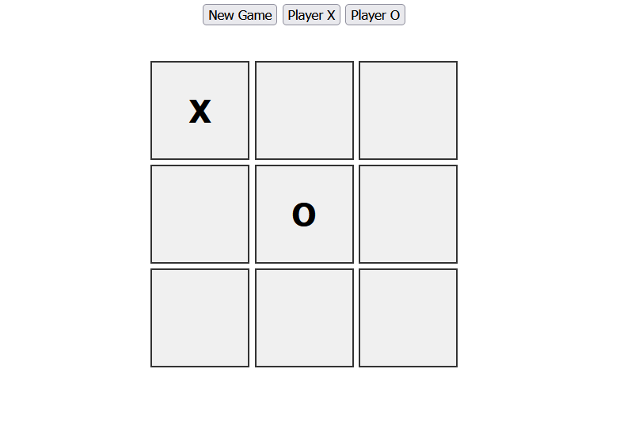
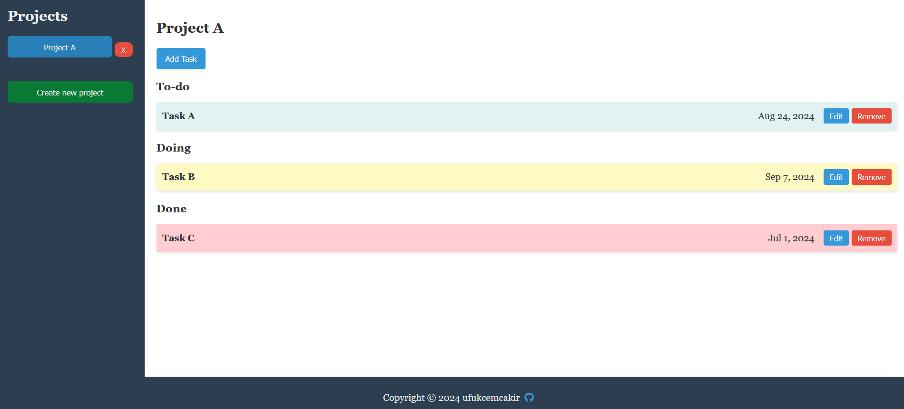
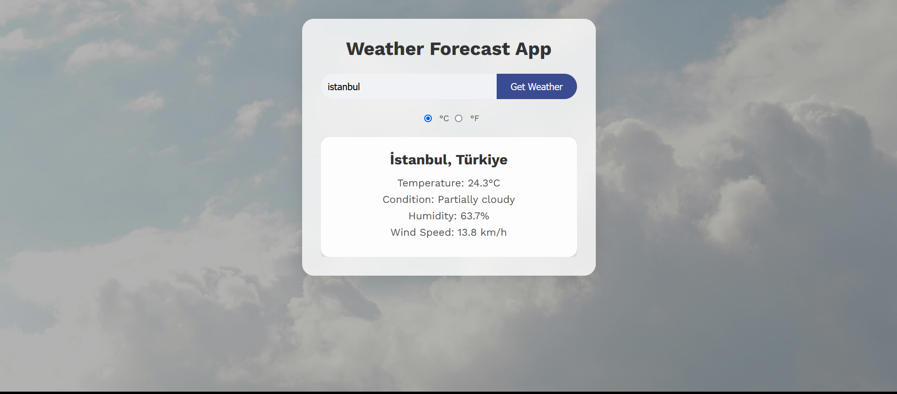
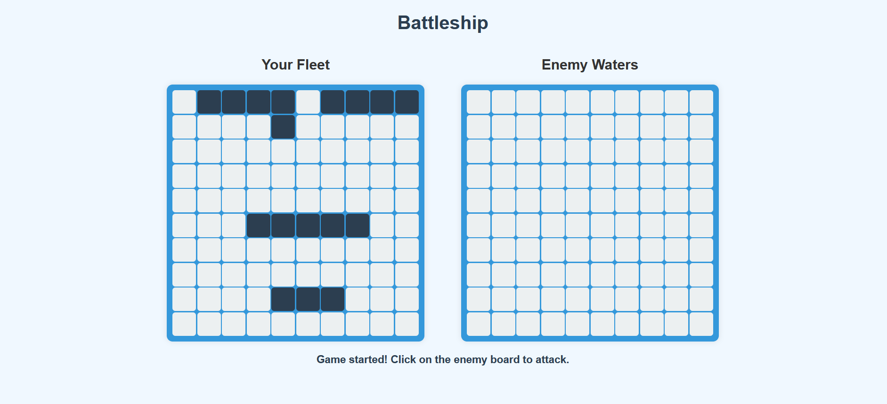

My work

Admin-Dashboard
Developed as part of "The Odin Project" projects, named - Admin Dashboard. Github link can be found below.

Tic-Tac-Toe
Developed as part of "The Odin Project" projects, named - Tic-Tac-Toe. Github link can be found below.

To-Do-List
Developed as part of "The Odin Project" projects, named - To-Do List. Github link can be found below.

Weather-App
Developed as part of "The Odin Project" projects, named - Weather App. Github link can be found below.

Battleship
Developed as part of "The Odin Project" projects, named - Battleship. Github link can be found below.